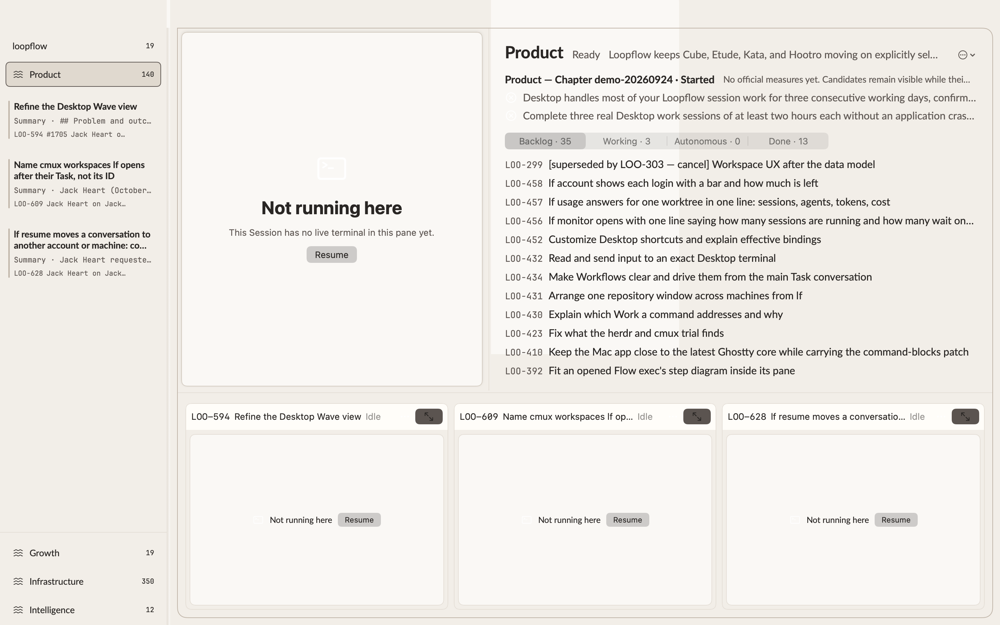

Wave view demo
Decision needed: walk the runbook in Loopflow Dev (open now, branch at 68419e094d), then answer the questions at the end.
Product Wave, third build

Session on the left, board on the right with Backlog · Working · Autonomous · Done (Backlog by default), and the strip below showing the three Working Tasks.
What I found before you looked
- LOO-299 is canceled in Linear but sits in Backlog. lf still reads it as unstarted, and the old strip tile called it Abandoned.
- A lighter rectangle shows across the top of the window, over the board’s left edge, in the capture. Check whether you see it live.
Earlier captures


Runbook
1. Select Product in the sidebar.Expected: Session left, board right, the Working strip below.
2. Click Working, Autonomous, Done, then Backlog in the board header.Expected: one list at a time that scrolls and loads more as you reach the end. Working rows show Available or Busy. On Done, hover the header to see “last 7 days” and click to edit the number.
3. Drag the line between the Session and the board, then the line above the strip.Expected: both resize, and stay put after you navigate away and come back.
4. Hover the board and click zoom.Expected: the board fills the view and the breadcrumb reads “Product › Board”. Click Product or press Esc to return.
5. Hover each pane and click hide, then use Show… in the header.Expected: the pane disappears and Show… lists it. Choosing it brings the pane back.
6. Click the expand button on the LOO-609 tile.Expected: the full Task opens with a breadcrumb back to Product. Back returns you to the Wave view.
7. Select loopflow (the repository) at the top of the sidebar.Expected: the same view over every repository Task.
8. In a terminal:
lf desktop state --json | jq '.windows[0].view_parts'Expected: session, board and tiles, with hidden, zoomed, ratio, the board’s selected section and the strip page.Questions
- Strip: (a) the same as the sidebar’s Working Tasks (as built); (b) Working + Autonomous.
- LOO-299 (canceled in Linear, unstarted in lf): (a) leave canceled Tasks off the board; (b) fix the Task state so canceled reads as abandoned everywhere.
- Anything from steps 1–8.